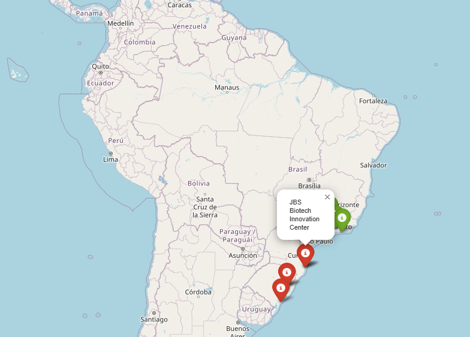
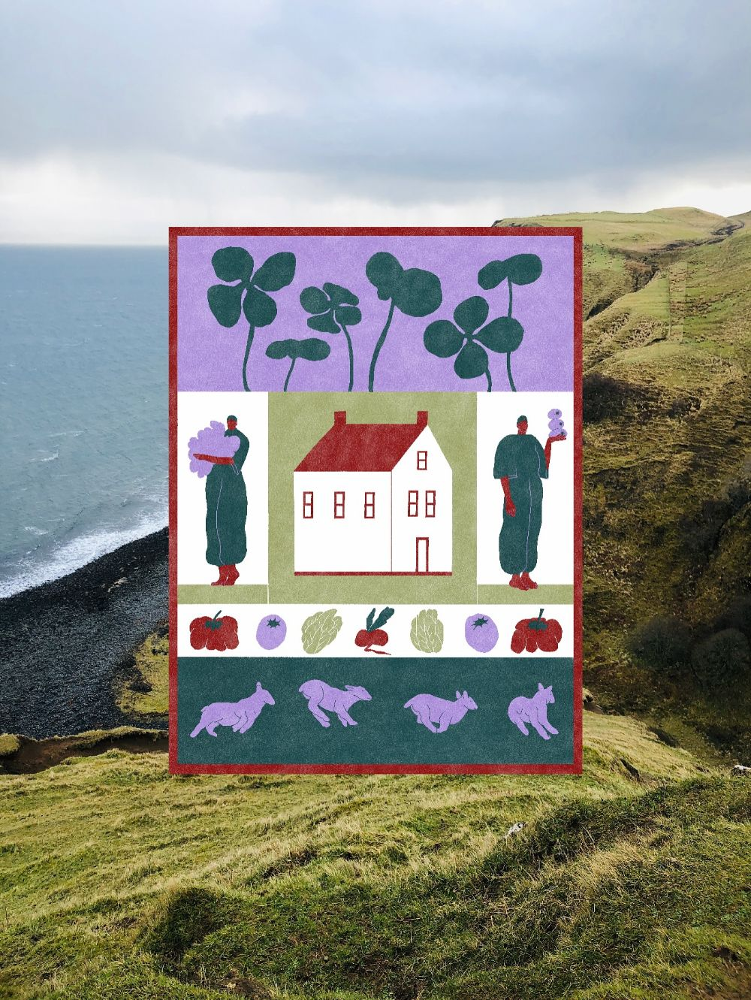

Map of Brazilian Alt-protein Startups (v1)
A small (and updated to 2026) map of Brazilian alt-protein startups. Currently a growing prototype.
View project →Welcome!
First-year undergrad in UFSC's Biology program, junior researcher, a member of Altprotein (GFI affiliated) and current data analysis intern. Interested in public health, data analysis and control of biorisks.

Hello! I'm (Vitória) Teresa, a student at the Federal University of Santa Catarina (UFSC) in Florianópolis, Brazil. I was raised in the mountains of the southern Brazil, a region shaped by cattle ranching and monoculture, a background that created the naturalist sensibility that now runs through my current work: I'm now a first-year undergrad in UFSC's Biology program; a member of my university's AltProtein Project (connected to GFI Brasil); a current data analysis intern; and a junior researcher investigating the cultivated meat regulatory scene in Brazil.
I'm interested in public health, data analysis and control of biorisks (as well as the intersection of biosecurity, technology and AI).

A small (and updated to 2026) map of Brazilian alt-protein startups. Currently a growing prototype.
View project →